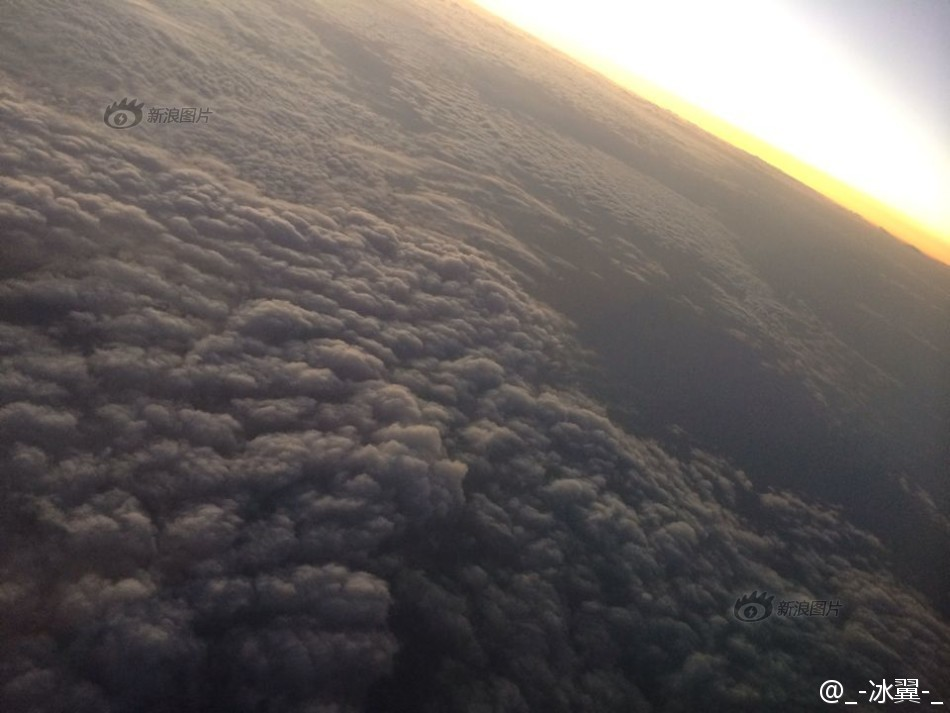
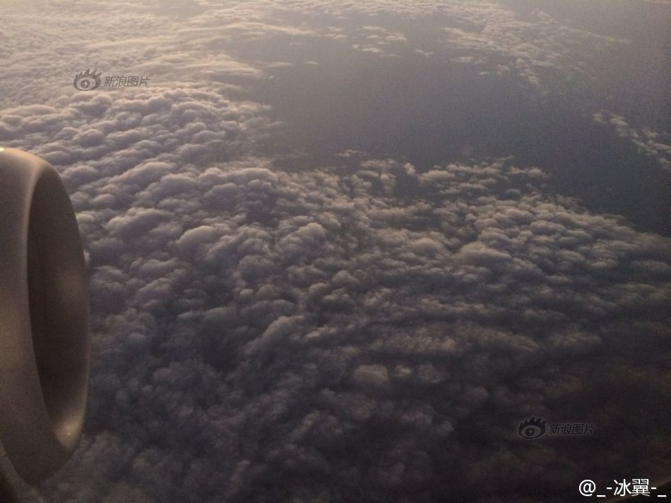
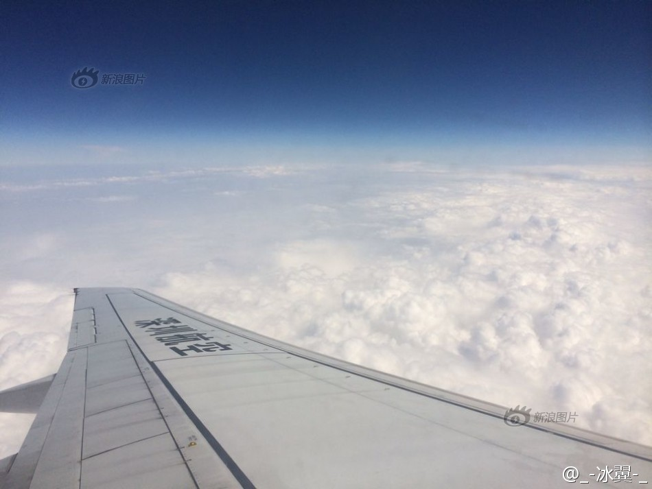
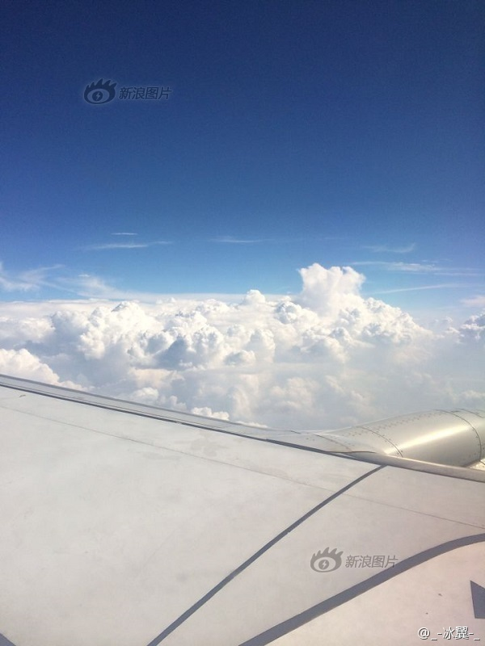

气象博士辟谣//@大脸撑在小胸:霾厚度在1km以内，哪能到这高度？而且主要在近地面层，随高度递减，要是这高度都能到这浓度的话，近地面得什么浓度？还能容你活着发微博？帝都雾霾的确很严重，但不需要用昏暗的云顶来吓唬人@_-冰翼-_:【雾霾·北京上空的上空】一位网友9日回京时，正好赶上持续雾霾，飞机降落前，他拍下了厚厚的霾层顶部，从高空看上去，土黄色的霾暗流汹涌，十分吓人。而之前几天他离京时，还是一片澄空白云。乘客拍摄北京霾层顶部 

 乘客拍摄北京霾层顶部
乘客拍摄北京霾层顶部